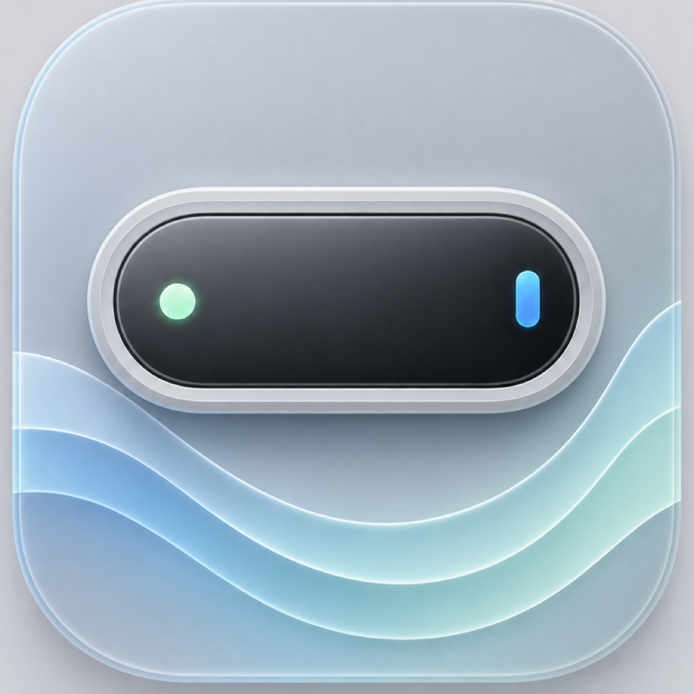

天气，抬眼就知道
当前天气、体感温度与湿度留在视线边缘，不必再打开天气 App。
出门前，少一次切换
NookFlow从顶部开始
查看 NookFlow 当前版本的灵动岛与文件拖拽实录。没有概念渲染，只有正在使用的产品。
恰到好处
不把桌面变成仪表盘。每项能力都在需要时出现，不使用时安静退场。
当前天气、体感温度与湿度留在视线边缘，不必再打开天气 App。
出门前，少一次切换快速新建、分类、设置优先级和到期提醒，并与 Apple 提醒事项同步。
今天要做什么，一眼清楚封面、歌曲信息、播放进度与播控集中呈现，不用切回播放器。
音乐不断，思路也不断菜单栏、胶囊和桌面三种形态，让歌词出现，却不挡住正在做的事。
跟唱，也能保持专注把常用应用收进两列或三列网格，鼠标不必再绕到程序坞。
入口更近，切换更少直接触发已配置的系统快捷指令，把重复操作留给自动化。
少走几步，多留一点专注拖入文件后直接存入文稿或隔空投送，不再来回寻找目标窗口。
从拿起文件到送达，只需一次拖拽把参考图、二维码或临时素材固定在顶部，需要时立即展开查看。
不用翻找，也不会打断CPU、内存与磁盘信息按需更新；界面不可见时停止不必要的刷新。
异常负载，更早发现从顶部开启镜子预览，快速确认状态，不必寻找相机应用。
准备好，再进入镜头不打断视线
同一首歌可以轻量显示在菜单栏、胶囊或桌面。以下均为 NookFlow 当前版本的真实界面。
NookFlow Pro
官网下载的是完整版本。免费功能无需登录；需要 Pro 时，在应用内输入激活码即可。
解锁音乐与待办功能，其他模块继续免费使用。
¥9.90常见问题
激活时会在本机生成不可迁移的设备密钥。服务器只保存公钥摘要和绑定关系，不读取 Mac 序列号。
先在旧设备的许可页面停用，再在新设备激活。无法访问旧设备时，可以联系支持重置绑定。
待办、应用列表和偏好设置以本地处理为主。许可服务只接收验证授权所需的设备公钥摘要与激活状态。
当前版本需要 macOS 14 或更高版本，并面向 Apple Silicon Mac 提供下载。
下载完整版本，免费开始使用。
下载 NookFlow 1.0.4SHA-256: 19eb296f32b9304b105fc978c556b49da4cb67e066a75d7908e2e9c96a672eb0
付款完成后，此页面会自动显示激活码。